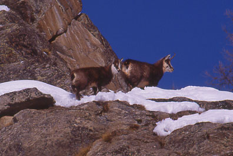
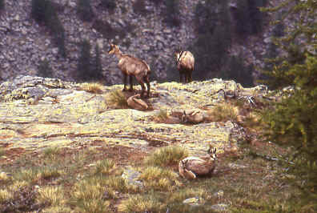

CAMOSCIO (CHAMOIS)

| Climate/Terrain | Colline e Montagne Temperate e Fredde |
| Frequency | Common |
| Organization | Gruppo |
| Activity Cycle | Day |
| Diet | Erbivoro |
| Intelligence | Animal (1) |
| Treasure | Nessuno |
| Alignment | Neutral |
| No. Appearing | 2d4 |
| Armor Class | 6 |
| Movement | 15 |
| Hit Dice | 1 + 2 |
| Thac0 | 20 |
| No. of Attacks | 1 Cornata |
| Damage / Attacks | 1d4 |
| Special Attacks | Nessuna |
| Special Defenses | Nessuna |
| Magic Resistance | Nessuna |
| Size | Small |
| Morale | Unsteady (6) |
| XP value | 18 |
Descrizione
ll camoscio è un Ungulato di medie dimensioni, caratterizzato da corna uncinate e da una colorazione contrastata del mantello. La lunghezza testa-corpo è di 120-150 cm e l’altezza alla spalla è di 70-85 cm. Il suo peso è di circa 50 kg. Il mantello estivo varia dal bruno-chiaro al grigio-giallastro, mentre quello invernale è brunoscuro, ed è particolarmente folto con peli lunghi; sono presenti due bande scure che ornano la testa, la spina dorsale, la coda e le zampe. Ambo i sessi portano le corna, e quelle del maschio sono, di solito, più grosse. L’adattamento all’ambiente di montagna ha favorito zampe molto angolate, zoccoli in grado di aderire sul ghiaccio e sulle rocce e vista molto acuta.
Combat
Il camoscio preferisce la fuga, se costretto al melee combatte saltellando e cercando di colpire il bersaglio con le sue corna appuntite. La sua agilità gli dona una buona classe armatura (ogni tiro su AC 7+ si considera completamente mancato).
Habitat/Society
I camosci conducono una vita di gruppo molto intensa.In estate il camoscio si nutre di piante erbacee e foglie, cercando il cibo migliore anche su cenge esposte; in inverno, quando la neve ricopre ogni cosa, si nutre con ciò che la montagna offre ossia gemme di pino ed abete, di rametti ed arbusti.
Ecology
La carne di camoscio è molto prelibata, i cacciatori possono venderla interamente ad un valore di 2 - 2,5 g.p.
